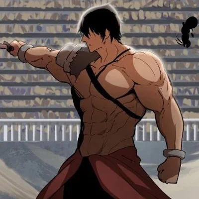

Ryu Han-Bin
The protagonist. A Korean man who has just finished his military service when he is sent to another world. His guide system is faulty, so his level keeps resetting and he stays in the training area for more than 20 years. The experience leaves him strong and hardened.
Main character OtherworlderAtisse
A young mage from the Bennister family of dragon hunters and the adopted younger brother of Lady Adora Bennister. A genius strategist who invents magical tools, he becomes Han-Bin's travelling companion.
Companion MageSpoiler: true identity
Atisse is secretly a dragon who can take human form.

Ephyr
Another companion who travels with Han-Bin.
CompanionSpoiler: true identity
Ephyr is a wyvern who can take human form.

Leonhart
A respected human warrior of Rathna known for his exceptional swordsmanship. His first encounters with Han-Bin are shaped by suspicion toward otherworlders, but his sense of honor and strong belief in justice make him an important figure in the story.
Warrior Swordsman
Kivye
An envoy connected to the Goddess of Darkness. She is sent to Rathna to seek help in protecting the world from the threat of Ormphlaus. Calm and mysterious, Kivye becomes closely involved with Han-Bin and the events surrounding the world's fate.
Divine envoy Ally